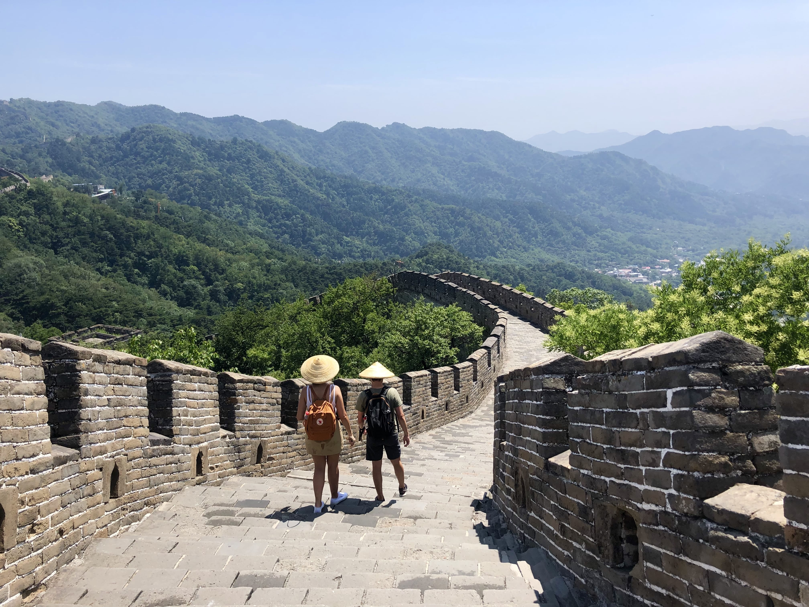
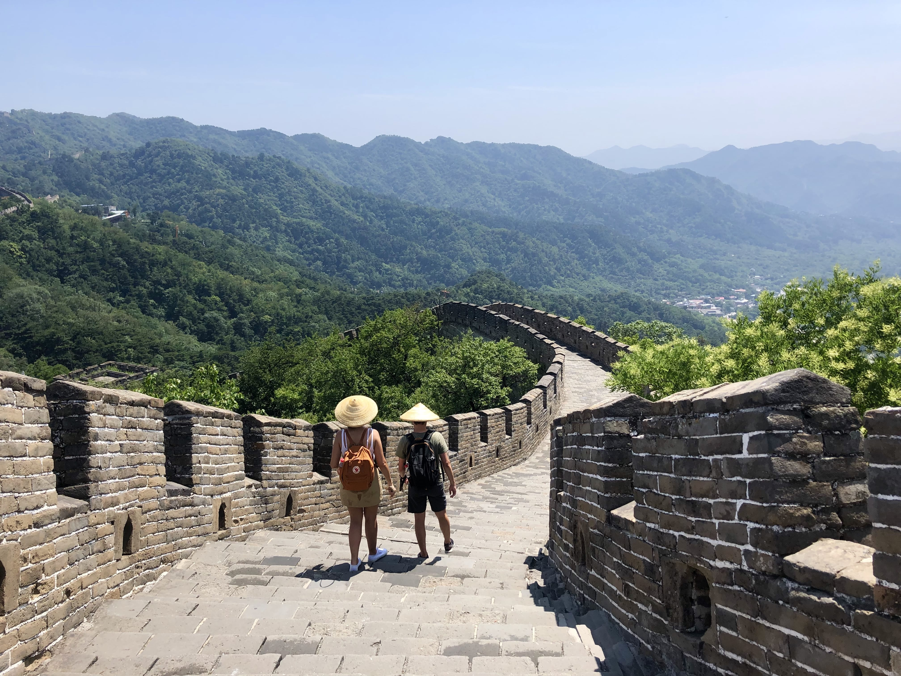

Jiankou to Mutianyu Great Wall
 

Great Wall of China (Credits: K. Dzumakajeva)
Description:
BOOK THE
TOUR HERE
TOUR HERE
Difficulty: MODERATE
Length: 8 km
Time: 4 - 5 hours
This is a moderate level hiking trail with an amazing opportunity to combine a historical part of The Great Wall of China and a fully restored part, and, of course, breathtaking views along all the way. The best part of this trail is that you don’t have to go down the same way you went up. Some parts of this hiking trail are pretty steep, so be ready to have some muscle pain in your legs for the next few days. Although this trail doesn’t require any previous hiking experience or special climbing gear. But comfortable and non slippery shoes are necessary.
Jiankou
is one of the most dangerous and wildest part of The Great Wall. It is also one of the most loved for photographers because of its unique construction style and attractive scenery.
Mutianyu
is a fully restored section of The Great Wall. It has many stairs, although some are quite steep. This is one of the most touristic parts of The Great Wall and it is also well-maintained and has a lot of facilities like a cable car, toboggan, lot of restaurants, souvenir shops etc. Due to the easy accessibility, expect a crowd of tourists everywhere.
Share your experience